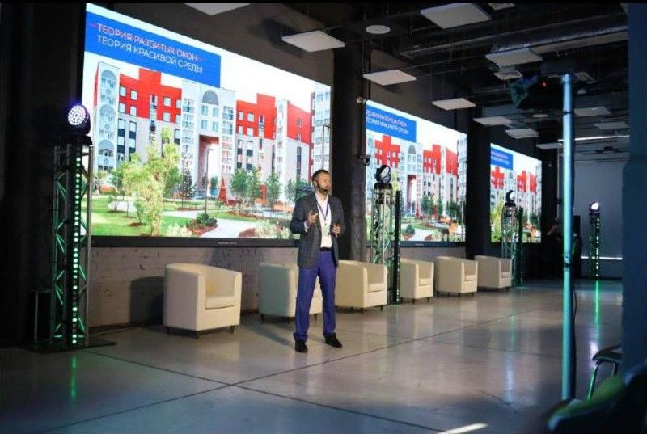
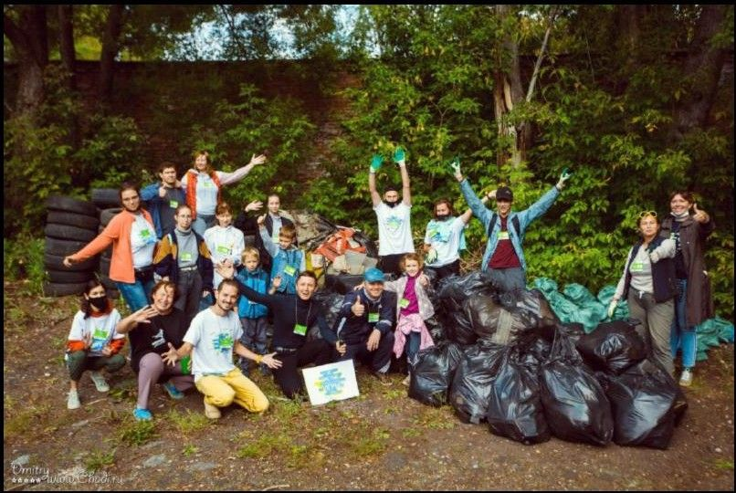
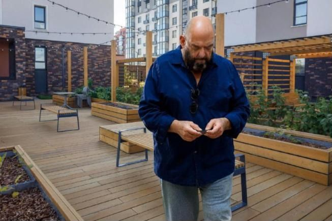
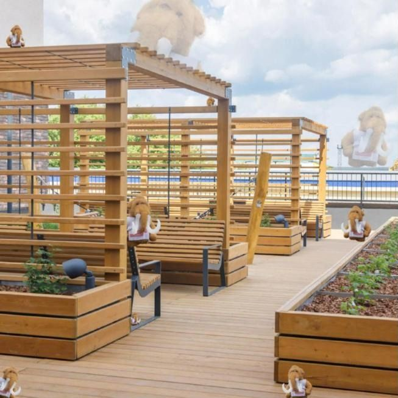
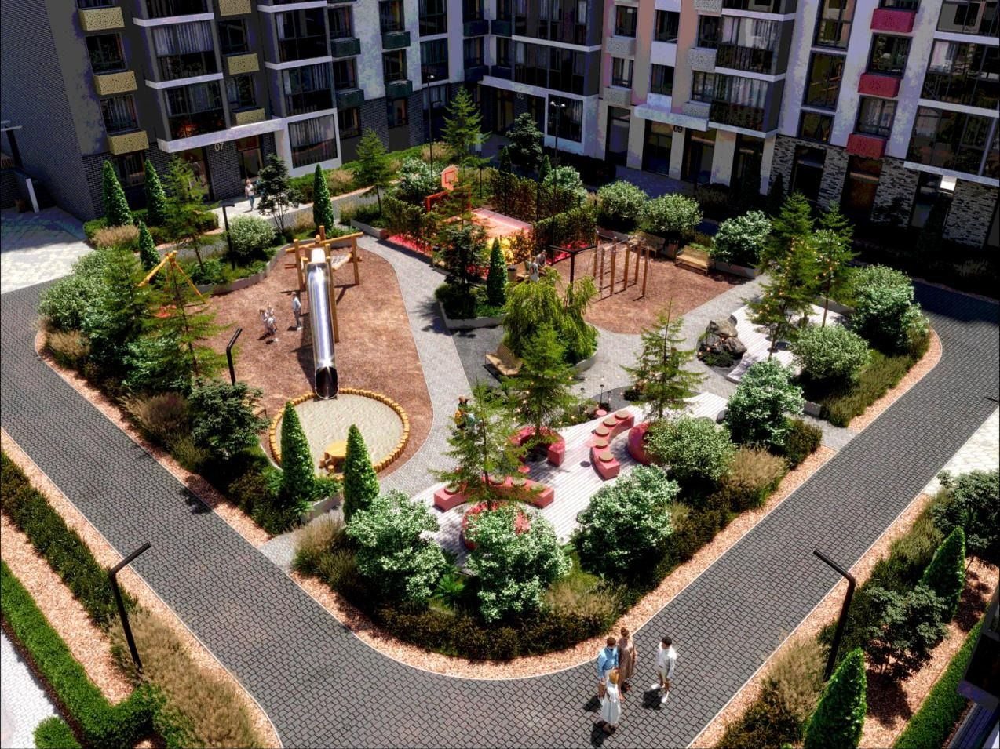
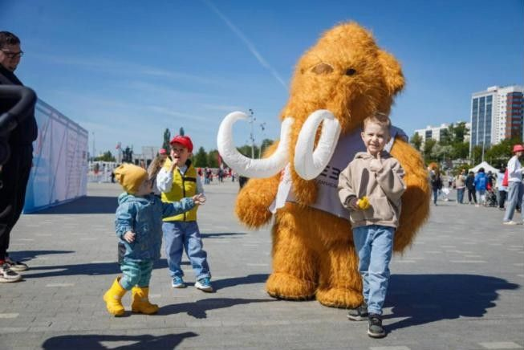
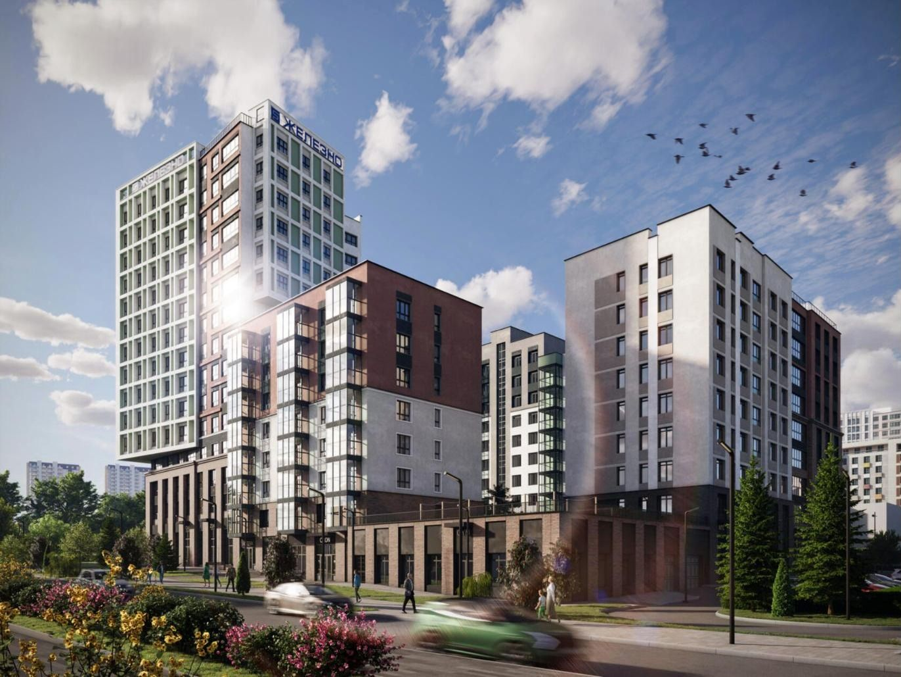

PR, вирусные и партизанские ходы
Как переписать репутацию места
инфоповоды, интрига, посевы в городских пабликах и Telegram-каналах, события

реализовано12.09.2023
Презентация на 300+ гостейЗапуск с представителями власти и риелторов, ролик «Счастье не за горами» — с городским арт-объектом, который знает каждый пермяк.
Пост о презентации — 1,7 тыс., лучший результат запуска

реализовано7.10.2023
«Чистые игры: Камаполис»Экоквест на набережной Заимки: команды горожан убирают берег будущего квартала, пикник, живая музыка, призы.
Промзона становится набережной, которую горожане считают своей

«Шуфутинский» ищет календарь на соседской террасе «Камаполиса»
реализовано3 сентября 2024 и 2025
«3 сентября»: Шуфутинский потерял календарьГлавный мем осени каждый год работает на проект. В 2024-м у офиса продаж стоял гигантский календарь — его можно было «перевернуть» самому. В 2025-м «Михаил Захарович потерял свой календарь» и бродил по дворам «Камаполиса»: искать его звали на экскурсию 6–7 сентября.
1,37 тыс. просмотров — топ-пост канала; мем привёл людей на экскурсию

Мамонты «спрятались» на соседской террасе
реализованосентябрь 2025
«Помогите! Мамонт потерялся»Символ проекта прячется по всему кварталу — на соседской террасе, во дворах, в новых корпусах. Поиски мамонта превращены в экскурсию по «Камаполису» с демо-квартирами.
Игра вместо приглашения на экскурсию

Иллюстрация: двор «Камаполиса» — район, которому нужны новые имена улиц
реализованосентябрь 2023
Улицы в честь пермских учёныхЗастройщик предложил переименовать Лесозаводскую, Рыбокоптильную и остановку «Мясокомбинат» и запустил движение #ЖелезноВместе.
Новость, которую обсуждают в городских пабликах

Мамонт на «ЗаБег.РФ» в Перми, май 2025
реализовано2024
Мамонт выходит в городРостовой пиксельный мамонт — на полумарафоне «ЗаБег.РФ» и городских событиях.
Символ проекта живёт вне рекламы

Иллюстрация: рендер квартала, который «вырастает» в AR
предложениеследующий шаг
AR «Заимка завтра»Наводишь телефон на пустырь у набережной — видишь квартал, школу и сквер Пермского периода.
Будущее можно увидеть, а не представить
Иллюстрация: мамонт — проводник по пермскому периоду
предложениеследующий шаг
«Пермь за 280 млн лет»Экскурсия от сквера Пермского периода до набережной: от древних морей до нового квартала. Совместно с музеем.
Повод для СМИ и школьных экскурсий